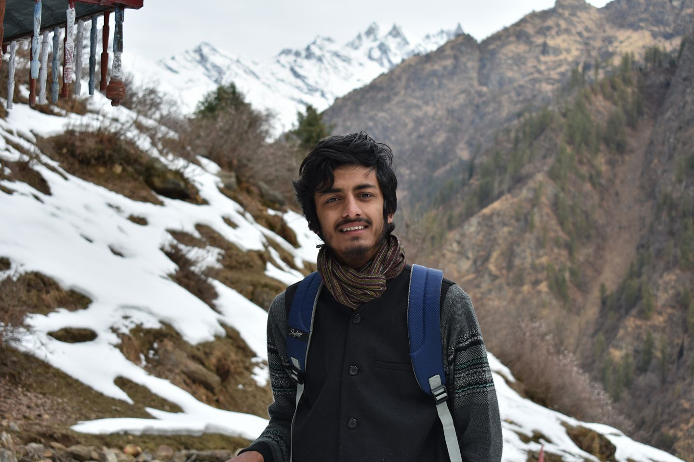

|  | Mayank ShahriaFinal year student at National Institute of Technology, Hamirpur. I am a Web Developer. |
National Institute of Technology Hamirpur, India
| Languages: | C++, HTML, Data Structures and Algorithms |
| Frameworks: | Scikit, Tensorflow, keras, Django |
| Software and Library: | Matlab, Adobe Photoshop, MS office |
| Platforms: | Windows, Arduino, Raspberry |
| Soft Skills: | Leadership, Event Management, Writing, Public Speaking, Time Management |
BSNL
COVID-19 Disease Identification from chest CT images using Discrete Wavelet Transform and Transfer Learning:
Filter Design for preprocessing of 1D signals using important DSP properties:
|
|
|
CodeChef Coding Competition |
|